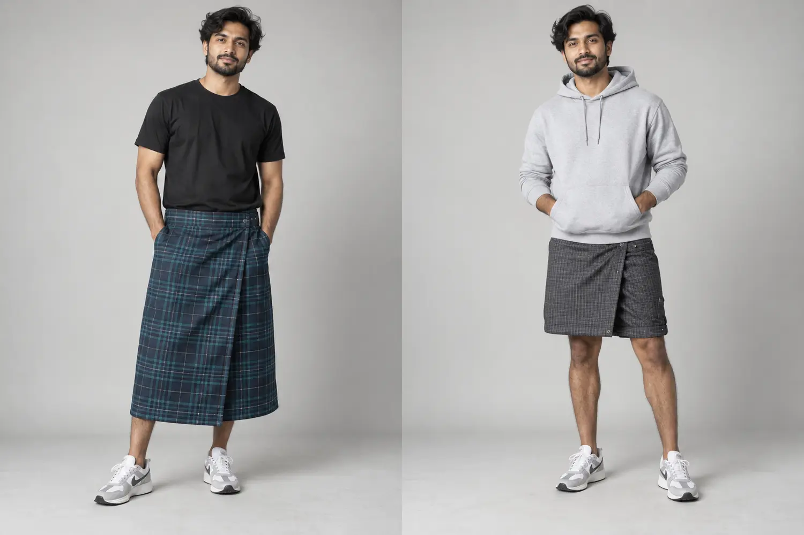
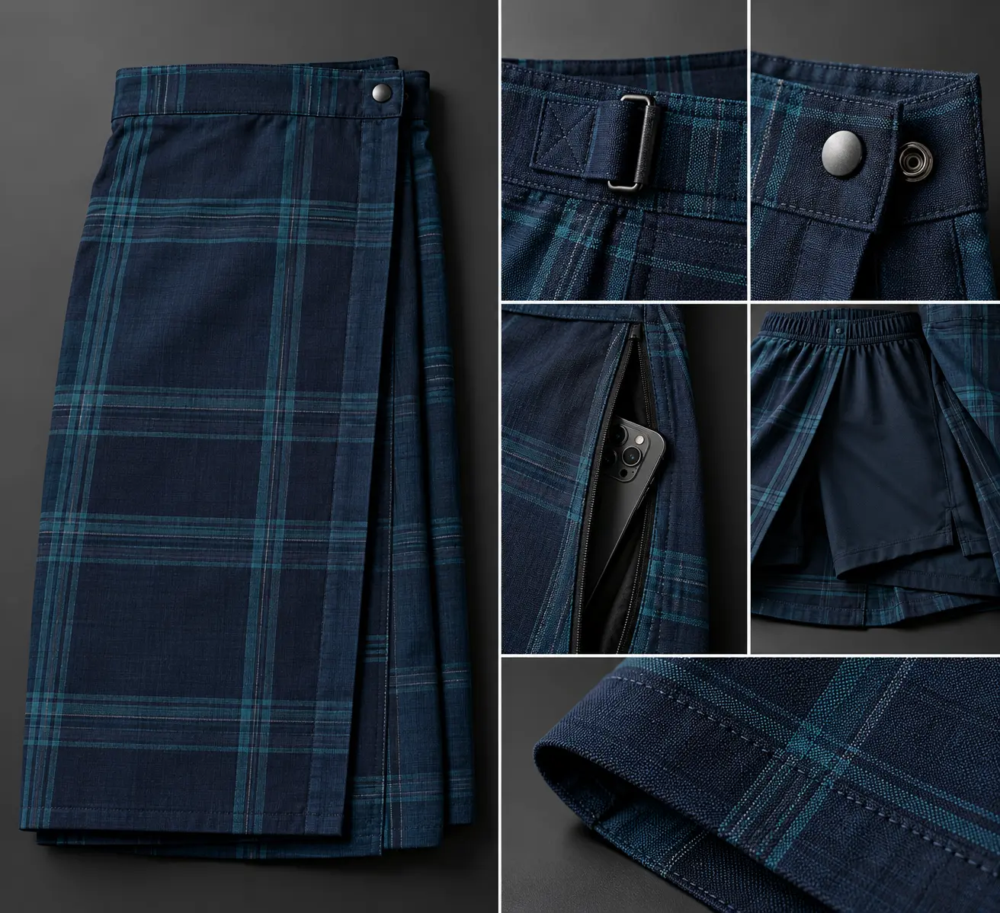

Classic
Traditional full-length drape for familiar comfort.
Modern Lungi is an exploratory convertible-lungi direction designed to retain woven identity while making fit, movement, storage and climate use easier for a wider global audience.
நவீன லுங்கி: பாரம்பரிய அழகை பாதுகாத்து, இன்றைய வாழ்க்கைக்கு ஏற்ற வகையில் ஒரே லுங்கியை ஐந்து விதமாகப் பயன்படுத்தும் புதிய தயாரிப்பு யோசனை.

The wearer chooses the mode that suits the moment, instead of needing a completely different garment.
Traditional full-length drape for familiar comfort.
Secure snap closure for walking and daily movement.
Fold-and-fasten knee length with optional inner coverage.
Protected phone, passport and key storage.
Optional removable lining for layered winter styling.

The strongest first prototype combines a small number of features that solve real customer concerns.
Each idea must be prototyped and tested before it becomes a product claim.
AirFlow fabric for heat and a detachable ThermoLayer for colder regions.
வெப்பம் மற்றும் குளிருக்கு தனித்தனி துணி அமைப்பு.An adjustable, knot-free system designed for easier sizing and security.
முடிச்சு இல்லாமல் எளிதாக அளவு மாற்றும் இடுப்பு அமைப்பு.Lightweight detachable coverage for cycling, travel and outdoor movement.
நடப்பு மற்றும் பயணத்திற்கு கழற்றக்கூடிய உள்ளாடை பாதுகாப்பு.Traditional checks on one side and a modern solid colour on the other.
ஒரே லுங்கியில் இரண்டு வெவ்வேறு தோற்றங்கள்.Separate secure areas for phone, passport, cards and keys.
மொபைல், பாஸ்போர்ட் மற்றும் சாவிக்கான பாதுகாப்பான பாக்கெட்டுகள்.Inside markers and a QR how-to video for first-time customers.
முதல் முறையாக அணிபவர்களுக்கு எளிய வழிகாட்டி.Fit studies for women, seniors, plus-size wearers and customers with limited mobility.
பல உடல் அமைப்புகள் மற்றும் வயதுகளுக்கான வடிவமைப்பு.A foldable concept that packs into its own pouch and may serve as a small cushion.
பயணப் பை அல்லது சிறிய குஷனாக மடிக்கக்கூடிய யோசனை.Soft waist, low-friction seams and easy side access for relaxed home use.
வீட்டு ஓய்வு மற்றும் எளிய அணிவதற்கான மென்மையான வடிவம்.Climate and colour research for USA, Canada, UK, Finland, Japan and other markets.
ஒவ்வொரு நாட்டின் காலநிலை மற்றும் நிற விருப்பத்திற்கான ஆய்வு.Instead of placing every feature in one product, these three focused versions can reveal what customers genuinely value.
A lightweight warm-weather version for home, resort and summer use.

A secure, packable version for airports, road trips and leisure.

A layered concept for customers in colder markets.
A good idea becomes a real product only after practical customer and manufacturing validation.
Share your country, preferred prototype, use case and the feature that matters most to you.
Send product feedbackInvestor or research partnershipThese Modern Lungi visuals and features are exploratory concepts. Final specifications, feasibility, availability, price and intellectual-property status must be confirmed before commercial use.